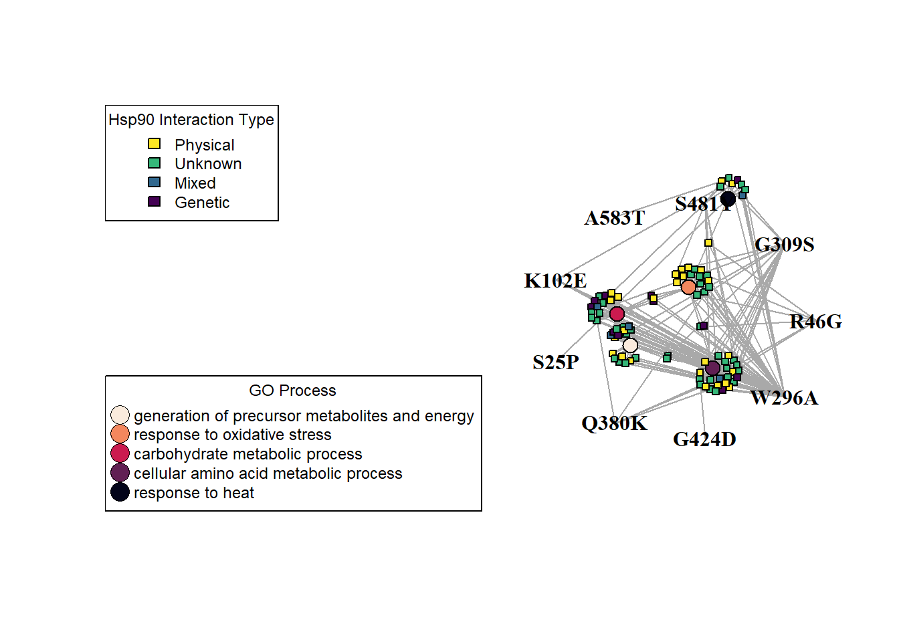
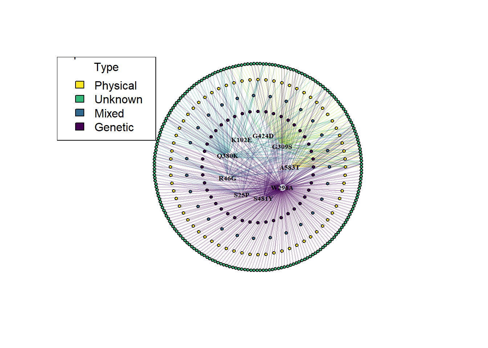

Code
# Load in our data
proteomic <- read.csv("trimmed_proteomic_Data.csv")The focus of my research is the study of Hsp90 molecular chaperone. Over the decades we come to realize this chaperone sits as a major hub of protein-protein interactions (Gopinath et al. 2014; Zhao et al. 2005; Rizzolo and Houry 2019) in which it regulates the folding, activity, and degradation of its clients.
The current study expands the preliminary proteomic analysis previously done in yeast by us(Hohrman et al. 2021), here we use quantitative proteomic analysis to compare extracts from yeast expressing wild-type yeast Hsp90 to nine different mutants. Our results demonstrate that the mutants elicit varied proteomic responses, even though the cells were harvested at temperatures that do not significantly affect growth. Overall, our results suggest:
It is possible to selectively inhibit Hsp90 function in vivo, and
Identifies cellular processes and/or likely clients that may be differentially affected by Hsc82 mutation.
Data source:
A significant hit in our study is a protein whose abundance had a |Log2 Fold Change| (LogFC) greater than 1.5, relative to wild-type.
# Load in our data
proteomic <- read.csv("trimmed_proteomic_Data.csv")Data Dictionary #1
# Use read.table() to read in the file
# Hsp90.Interactors <- read.table(file_path, header = TRUE, sep = "\t", stringsAsFactors = FALSE)Data Dictionary #2
GO.terms <- read.table(file = "GO Slim Mapper Results.txt", header = TRUE, sep = "\t", stringsAsFactors = FALSE)Data Dictionary #3
library(igraph)Since our objective is to construct a protein interaction network, intuitively our nodes will be our significant hits found in our study. However, we must also include our experimental variables, in this case single point mutations in the Hsp90 chaperone, this will help promote separation/clustering between nodes later when we apply our measurements from DIA-MS.
# Visualize 350 nodes corresponding to the significant hits in our data
nodes <- unique(c(proteomic$contrast, proteomic$Gene))
g <- make_empty_graph(directed = FALSE)
g <- add_vertices(g, length(nodes))
V(g)$name <- nodes
plot(g,
margin = -.4,
vertex.size = 4,
vertex.label.cex = .5,
xlim=c(-1.5, 1.5), ylim=c(-1.5,1.5)
)
In this circle of nodes we have our 9 Hsp90 mutants and 350 proteins that had a significant change in protein abundance in at least one mutant strain.
Now we must establish the relationship between these nodes. Starting with the relationship between our protein hits and experimental variables (Hsp90 mutants). These proteins were found to have a significant change in abundance when at least one mutant Hsp90 is expressed as the sole source of Hsp90.
edges <- data.frame(
from = proteomic$Gene,
to = proteomic$contrast,
LogFC = proteomic$logFC,
p = proteomic$P.Value
)
# Convert edge list to indices
edges$from <- match(edges$from, nodes)
edges$to <- match(edges$to, nodes)
# create a list of alternating values from 'from' and 'to' columns
edge_list <- c(rbind(edges$from, edges$to))
g <- add_edges(g, edges = edge_list)
# Specify edge length based on attribute: LogFC
edge_weights <- abs(edges$LogFC)
E(g)$weight <- edge_weights# Plot the network
plot(g)
Nice, we now have the results of our DIA-MS experiments for each mutant ‘condition’ visualized as a network. However, I think it is safe to say it is garbage and unintelligible as-is. Let’s make some conscious design choices to make this at least visually pleasing to the eye. Bonus points if it reveals something cool!
# Nodes
nodes <- unique(c(proteomic$contrast, proteomic$Gene))
g <- make_empty_graph(directed = FALSE)
g <- add_vertices(g, length(nodes))
# set all vertex labels to an empty string
V(g)$label <- ""
# manually assign labels to the 9 (mutant) nodes
V(g)$label[1:9] <- nodes[1:9]
# node colors
V(g)$color <- "white"
# Hide the mutant node shapes
V(g)$size <- 3
V(g)[1:9]$size <- 5
# Hide mutant nodes, but leave labels
V(g)$shape <- "circle"
V(g)$shape[1:9] <- "none"
# Edges
edges <- data.frame(
from = proteomic$Gene,
to = proteomic$contrast,
LogFC = proteomic$logFC,
p = proteomic$P.Value
)
# Convert edge list to indices
edges$from <- match(edges$from, nodes)
edges$to <- match(edges$to, nodes)
# create a list of alternating values from 'from' and 'to' columns
edge_list <- c(rbind(edges$from, edges$to))
g <- add_edges(g, edges = edge_list)
# Specify edge length based on attribute: LogFC
# "Undo" the Log (base: 2) so that larger LogFC values have more 'weight'
# add 10 to all values to help make the network physically smaller.
edge_weights <- abs(edges$LogFC)
E(g)$weight <- edge_weights
# c <- cluster_louvain(g, resolution = 1.25)
layout <- layout_with_fr(g)
# Plot the network
set.seed(420)
plot(g,
layout = layout,
margin = -.8, # allow the network to use up more of the margin
vertex.label.cex = .5,
vertex.label.font = 2, # Bold
vertex.label.color = "black",
edge_arrow_mode = 0,
xlim=c(-1.75, 1.75), ylim=c(-1.75, 1.75) # Increase the plot size to help accommodate the network
)
Design choices: We are more interested in results as a whole and not individual proteins (for now at least), node size was decreased and labels removed; To help distinguish between the 2 node classes/groups: Hsp90 mutations and Proteins, the mutant node shapes were removed, leaving behind the label.
library(tidyr)Warning: package 'tidyr' was built under R version 4.1.3
Attaching package: 'tidyr'The following object is masked from 'package:igraph':
crossing# Create an example data frame
df <- data.frame(group = c(1, 2, 3),
members = c("A, B, C", "D, E, F", "G, H"))
# Separate the comma-separated values in the "members" column into separate rows
df_split <- separate_rows(df, members, sep = ", ")
# View the resulting data frame
df_split# A tibble: 8 x 2
group members
<dbl> <chr>
1 1 A
2 1 B
3 1 C
4 2 D
5 2 E
6 2 F
7 3 G
8 3 H # all vertex shapes, minus "raster", that might not be available
shapes <- setdiff(shapes(), "")
g <- make_ring(length(shapes))
set.seed(42)
plot(g, vertex.shape=shapes, vertex.label=shapes, vertex.label.dist=1,
vertex.size=15, vertex.size2=15,
vertex.pie=lapply(shapes, function(x) if (x=="pie") 2:6 else 0),
vertex.pie.color=list(heat.colors(5)))
# add new vertex shape, plot nothing with no clipping
add_shape("nil")
plot(g, vertex.shape="nil")# create a sample data frame with 9 sets of measurements
set.seed(123)
df <- data.frame(cond1 = rnorm(10), cond2 = rnorm(10), cond3 = rnorm(10),
cond4 = rnorm(10), cond5 = rnorm(10), cond6 = rnorm(10),
cond7 = rnorm(10), cond8 = rnorm(10), cond9 = rnorm(10))
# calculate the correlation matrix between all pairs of conditions
cor_matrix <- cor(df)library(igraph)
set.seed(1234)
# create a random igraph network
g <- erdos.renyi.game(10, 0.2)
# assign a group number to each node
V(g)$group <- sample(1:3, 10, replace=TRUE)
# plot the igraph network with the group annotation
plot(g, vertex.color=V(g)$group, vertex.size=20, vertex.label=NA,
main="Igraph network with group annotation")
legend("topleft", legend=unique(V(g)$group), fill=unique(V(g)$group))library(igraph)
set.seed(1234)
# create a random igraph network
g <- erdos.renyi.game(10, 0.2)
# assign a group number to each node
V(g)$group <- sample(1:3, 10, replace=TRUE)
# detect communities using Louvain algorithm
c <- cluster_louvain(g)
# plot the igraph network with group annotation and cluster highlighting
plot(c, g, vertex.color=V(g)$group, vertex.size=20, vertex.label=NA,
mark.groups=TRUE, mark.border=2, main="Igraph network with group and cluster annotation")
legend("topleft", legend=unique(V(g)$group), fill=unique(V(g)$group))# # Create an example graph with groups assigned to nodes
# g <- graph_from_data_frame(data.frame(from = sample(1:10, 20, replace = TRUE),
# to = sample(1:10, 20, replace = TRUE)))
# V(g)$group <- sample(1:3, 10, replace = TRUE)
#
# # Set colors for the groups
# group_colors <- c("red", "green", "blue")
#
# # Assign initial coordinates to nodes in a circle
# coords <- layout_in_circle(g)
#
# # Apply Kamada-Kawai layout to cluster nodes by group
# layout <- layout_with_kk(g, initial = coords,
# dim = 2,
# niter = 1000,
# user.weights = V(g)$group,
# weight.exp = 1)
#
# # Plot the graph with clustered nodes and group annotations
# plot(g,
# layout = layout,
# vertex.color = group_colors[V(g)$group],
# vertex.label.color = "black",
# vertex.label.family = "sans",
# vertex.label.cex = 1,
# vertex.size = 20,
# margin = -0.5,
# vertex.shape = "circle",
# edge.color = "gray")
#
# # Add group annotations
# for (group in unique(V(g)$group)) {
# members <- V(g)$name[V(g)$group == group]
# x <- mean(layout[V(g)$name %in% members, 1])
# y <- mean(layout[V(g)$name %in% members, 2])
# text(x, y, paste0("Group ", group), col = group_colors[group], font = 2, cex = 2)
# }library(igraph)
# Create an empty graph with 10 nodes arranged in a ring
g <- make_empty_graph(10)
g <- add_edges(g, c(1,2,2,3,3,4,4,5,5,6,6,7,7,8,8,9,9,10,10,1))
# Set initial layout
layout <- layout_with_fr(g)
# Set coordinates for the first 9 nodes in a ring formation
fixed_coords <- cbind(cos(seq(0, 7/4*pi, length.out=9)), sin(seq(0, 7/4*pi, length.out=9)))
fixed_coords <- rbind(fixed_coords, c(0,0)) # add coordinate for 10th node
# Set fixed nodes in layout matrix
layout[1:10,] <- fixed_coords
# Plot the graph with fixed positions for the first 9 nodes
plot(g, layout = layout)# Create a sample graph
g <- sample_gnm(10, 15)
# Set the weight of all edges to 0.5
E(g)$weight <- 0.5
# Set the weight of edges between nodes with no edges between them to 0
no_edges <- which(degree(g) == 0)
for (i in no_edges) {
for (j in no_edges) {
if (i < j) {
E(g)[i, j]$weight <- 5
}
}
}
# Calculate the layout with the modified weights
layout <- layout_with_fr(g, weights = E(g)$weight)
plot(g)